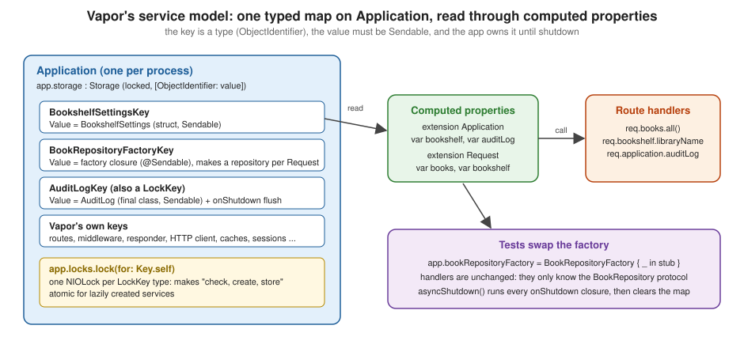

Services, Storage and Dependency Injection
|
This content was generated with the assistance of AI and should be verified against the official documentation before being relied on in production. |
This page is written against Vapor 4.122.2 on Swift 6.4 (the package builds in the Swift 6 language mode with tools version 6.3, as the official template does; Vapor 4.122.2 itself needs tools version 6.0) with swift-nio 2.104.0, checked on 2026-10-17. Every Swift listing on this page was compiled in one SwiftPM package (an executable target, a library target for the provider-style example and a Swift Testing target) with zero warnings, and the six tests shown passed. Vapor 5 is at 5.0.0-beta.4 and is not released yet; this page does not claim anything about its service model beyond what is said in the version notes. The page extends the Bookshelf service of the earlier pages of this section. Swift itself is covered by the Swift Reference; the Extensions and Nested Types, Protocols and Actors, Isolation and Sendable pages explain the language features used below.
What "services" means in Vapor 4
Handlers need things that outlive a request: a settings value, a database pool, an HTTP client, a cache, a repository.
Vapor 4 has no dependency-injection container: no registration step by protocol, no make call, no scopes. Instead it
gives you two plain Swift mechanisms and one convention:
-
Storage:
Application(andRequest) carry a typed key-value map,storage, where the key is a Swift type and the value is whatever that key says it is. -
Extensions: you add a computed property to
ApplicationorRequestthat reads and writes the map, and handlers use that property (req.books,app.auditLog). Everything Vapor itself ships follows the same shape, fromapp.routestoapp.http.clienttoreq.cache. -
The convention is to program against a protocol, store a factory for the implementation, and replace the factory in tests. This is dependency injection by composition, and it needs no framework.

Where it runs in the request
In the request lifecycle (SwiftNIO accepts
the connection and parses HTTP, Vapor builds a Request, the responder chain runs the middleware, the router matches a
route, the handler runs, the returned value is encoded into the Response), services are configured before the first
request, in configure(:) (see Application lifecycle and
entrypoint), and read during the handler step, through req.application (every Request holds a reference to the
Application that created it) or through a computed property on Request that does so. Middleware reads services the
same way, from request.application. A service is therefore shared by every request on every event loop thread at the
same time, which is why the storage rules below are about Sendable and locking.
Extending Application with a typed value
Application.storage is a value of the struct Storage (Sources/Vapor/Utilities/Storage.swift). Its keys are types
that conform to StorageKey, which has one associated type:
// Vapor 4.122.2
public protocol StorageKey {
/// The type of the stored value associated with this key type.
associatedtype Value: Sendable
}The map is keyed by ObjectIdentifier(Key.self), so a key is just a type name; it is never instantiated. That is why
the conventional key is a tiny private struct declared inside the extension that uses it: nobody else can read or
overwrite the entry, and two unrelated packages can never collide. The Value: Sendable requirement is deliberate:
Application is Sendable and shared by every thread, so what you put in it must be safe to share.
The smallest useful service is a settings value, with a default so that reading before configuration cannot crash:
import Vapor
struct BookshelfSettings: Sendable {
var libraryName: String
var maxLoansPerMember: Int
}
extension Application {
private struct BookshelfSettingsKey: StorageKey {
typealias Value = BookshelfSettings
}
/// Typed, defaulted access to the settings; assign it once in `configure(_:)`.
var bookshelf: BookshelfSettings {
get {
storage[BookshelfSettingsKey.self]
?? BookshelfSettings(libraryName: "Bookshelf", maxLoansPerMember: 5)
}
set {
storage[BookshelfSettingsKey.self] = newValue
}
}
}
extension Request {
/// Read-only shortcut for handlers.
var bookshelf: BookshelfSettings {
application.bookshelf
}
}Source: Vapor docs: Services
Three things are worth reading in that listing:
-
The key is
privateand sits insideextension Application; the property is the only door to the entry. -
Request.bookshelfforwards toapplication.bookshelf. A handler therefore writesreq.bookshelf.libraryNameand never needs to know where the value lives. Vapor does the same forreq.logger,req.cacheandreq.client. -
BookshelfSettingsis astructwhose stored properties areSendable, so it satisfiesValue: Sendablewith an explicit conformance. The settings are assigned once inconfigure(_:)and only read afterwards, which is the safest shape for a stored value.
Reading is app.storage[Key.self], which returns Key.Value?; storage.get(Key.self) is the same call and
storage.contains(Key.self) tests for presence without reading. Assigning nil removes the entry (and runs its
shutdown closure, if it has one).
Reading the services from a handler
Settings are used like any other property; the Bookshelf routes at the end of this page start with:
app.get("library") { req async -> String in
"\(req.bookshelf.libraryName) (max \(req.bookshelf.maxLoansPerMember) loans)"
}Source: Vapor docs: Routing
The compile-time rules: Sendable and StorageKey
Because Value must be Sendable, the compiler rejects a key whose value cannot be shared. In the Swift 6 language
mode this is an error, not a warning:
final class Counter { // not Sendable: a mutable class
var value = 0
}
extension Application {
struct CounterKey: StorageKey {
typealias Value = Counter
}
}error: type 'Application.CounterKey.Value' (aka 'Counter') does not conform to the 'Sendable' protocol
note: class 'Counter' does not conform to the 'Sendable' protocolThe ways out are the usual ones, in order of preference: store an immutable value (struct of Sendable fields); store
an actor; store a final class that is Sendable because every stored property is a let of a Sendable type or is
protected by a lock such as NIOLockedValueBox (AuditLog below); and only as a last resort mark the class
@unchecked Sendable after proving the safety by hand. The page
Swift concurrency in Vapor shows each of these in depth.
The second compile-time rule is that the key must conform to StorageKey (and, for locks, to LockKey):
error: subscript 'subscript(_:)' requires that 'Missing' conform to 'StorageKey'
error: instance method 'lock(for:)' requires that 'Request' conform to 'LockKey'Mutable and lazily created services: app.locks
app.storage is not safe for read-modify-write sequences. Both its getter and its setter take a lock, but each only for
the instant of the copy, and app.storage[Key.self] = value is a get, a mutation of the copy and a set. Two threads
that do "if missing, create and store" at the same time can both create a value, and one of them is silently lost, or
can lose other writes made in between. Vapor’s own lazily created services guard this with app.locks (the
HTTP Client page shows app.http.client built this way):
-
app.locks.main(also available asapp.sync) is one globalNIOLock; -
app.locks.lock(for: Key.self)returns aNIOLockthat belongs to the key type, creating it on first use under the main lock; the key must conform toLockKey, which is an empty marker protocol (public protocol LockKey {}).
Vapor’s in-memory cache and its HTTP client use exactly this: the same private struct conforms to both StorageKey and
LockKey, and the lazy getter takes the key’s lock around "get, or create and set".
The same pattern for an application service that is created on first use and flushed at shutdown:
import NIOConcurrencyHelpers
import Vapor
final class AuditLog: Sendable {
private let entries = NIOLockedValueBox<[String]>([])
func record(_ entry: String) {
entries.withLockedValue { $0.append(entry) }
}
var snapshot: [String] {
entries.withLockedValue { $0 }
}
func flush(to logger: Logger) {
let pending = entries.withLockedValue { $0 }
logger.info("Flushing audit log", metadata: ["entries": "\(pending.count)"])
}
}
extension Application {
private struct AuditLogKey: StorageKey, LockKey {
typealias Value = AuditLog
}
/// Created on first use. The per-key lock makes "check, create, store" atomic.
var auditLog: AuditLog {
locks.lock(for: AuditLogKey.self).withLock {
if let existing = storage[AuditLogKey.self] {
return existing
}
let created = AuditLog()
let logger = self.logger
storage.set(AuditLogKey.self, to: created, onShutdown: { log in
log.flush(to: logger)
})
return created
}
}
}Source: Vapor docs: Services
The test auditLogIsCreatedOnceUnderConcurrency reads app.auditLog from 50 concurrent tasks and asserts that all of
them received the same instance. Lock for a key only when the service is created lazily or mutated after startup; a
value assigned once in configure(_:) and then only read needs no lock, because configuration finishes before the
server accepts connections.
Shutdown closures
storage.set(_:to:onShutdown:) takes an optional @Sendable closure that Vapor calls when the application shuts down
(or when you remove the key by assigning nil). app.asyncShutdown() runs the closure of every entry and then clears
the map; clear() on its own does not run them. Because set is marked unavailable from asynchronous contexts, use
await storage.setWithAsyncShutdown(Key.self, to: value, onShutdown: { value in ... }) when you configure in an
async function and the cleanup is itself asynchronous (closing a connection pool, flushing a client):
asyncShutdown() prefers the async closure and falls back to the synchronous one. A shutdown closure that throws is
caught and logged as a warning; it never stops the other entries from shutting down.
Applications can also hook the lifecycle with a LifecycleHandler (app.lifecycle.use(handler)) that implements
willBootAsync, didBootAsync and shutdownAsync; that is the tool for work that is not "one value per key", such as
warming a cache at boot. The lifecycle phases are described on
the lifecycle page.
Request-scoped storage
Request has its own storage, a Storage value with the same API, that lives only as long as the request. It is how
a middleware passes a computed value to the handler without a global: a middleware stores the authenticated user or the
request ID, and a computed property on Request reads it back. Vapor’s own authentication cache (req.auth) and
req.session are stored this way. Do not put an Application service there, and do not store a Request in
app.storage: that leaks the request (and its body and logger) for the life of the process. The Request itself is
Sendable and holds req.application and req.logger; see Request and
response for the rest.
The repository pattern: protocol, factory, req.books
Settings are data. Behaviour (read the catalogue, create a book) is where dependency injection pays: handlers should depend on what a book store does, not on how (memory, Fluent, a remote service). The pattern has four parts:
-
a protocol that describes the capability and is
Sendable; -
one or more implementations;
-
a factory stored in
app.storagethat builds an implementation for a given request; -
a computed property on
Requestthat calls the factory.
import Vapor
struct Book: Content, Equatable {
var id: UUID?
var title: String
var author: String
}
protocol BookRepository: Sendable {
func all() async throws -> [Book]
func find(_ id: UUID) async throws -> Book?
func create(title: String, author: String) async throws -> Book
}
actor InMemoryBookRepository: BookRepository {
private var books: [UUID: Book] = [:]
func all() async throws -> [Book] {
books.values.sorted { $0.title < $1.title }
}
func find(_ id: UUID) async throws -> Book? {
books[id]
}
func create(title: String, author: String) async throws -> Book {
let book = Book(id: UUID(), title: title, author: author)
books[book.id!] = book
return book
}
}
/// How the application builds a repository for a request.
struct BookRepositoryFactory: Sendable {
let make: @Sendable (Request) -> any BookRepository
}
extension Application {
private struct BookRepositoryFactoryKey: StorageKey {
typealias Value = BookRepositoryFactory
}
var bookRepositoryFactory: BookRepositoryFactory? {
get { storage[BookRepositoryFactoryKey.self] }
set { storage[BookRepositoryFactoryKey.self] = newValue }
}
}
extension Request {
var books: any BookRepository {
guard let factory = application.bookRepositoryFactory else {
fatalError("No BookRepository configured. Set app.bookRepositoryFactory in configure(_:).")
}
return factory.make(self)
}
}Source: Vapor docs: Services
Why a factory and not the repository itself? A factory closure receives the Request, so an implementation can take
req.db, req.logger or req.client and be constructed per request (a Fluent repository, see
Fluent Models, is a thin wrapper around req.db). A shared implementation, like
the in-memory actor here, is simply returned from a closure that captured it:
BookRepositoryFactory { _ in repository }. The factory is a struct with a single @Sendable closure so that it
satisfies Value: Sendable.
fatalError in Request.books mirrors Vapor’s own services (req.cache stops with "No cache configured. Configure
with app.caches.use(…)" when none was chosen): a missing service is a programming error that must show up in the first
request of the first test, not a runtime condition to recover from.
The wiring is a few lines of configure(_:) and the handlers know only the protocol:
import BookshelfStore
import Vapor
func configure(_ app: Application) async throws {
app.bookshelf = BookshelfSettings(libraryName: "City Library", maxLoansPerMember: 3)
let repository = InMemoryBookRepository()
app.bookRepositoryFactory = BookRepositoryFactory { _ in repository }
app.bookStores.use(.inMemory)
try routes(app)
}import BookshelfStore
import Vapor
struct CreateBook: Content {
var title: String
var author: String
}
struct BooksController: RouteCollection {
func boot(routes: any RoutesBuilder) throws {
let books = routes.grouped("books")
books.get(use: index)
books.post(use: create)
}
@Sendable func index(req: Request) async throws -> [Book] {
req.application.auditLog.record("list")
return try await req.books.all()
}
@Sendable func create(req: Request) async throws -> Response {
let input = try req.content.decode(CreateBook.self)
let book = try await req.books.create(title: input.title, author: input.author)
req.application.auditLog.record("create \(book.title)")
return try await book.encodeResponse(status: .created, for: req)
}
}
func routes(_ app: Application) throws {
app.get("library") { req async -> String in
"\(req.bookshelf.libraryName) (max \(req.bookshelf.maxLoansPerMember) loans)"
}
app.get("titles") { req async throws -> [String] in
try await req.bookStore.titles()
}
try app.register(collection: BooksController())
}Source: Vapor docs: Routing
BooksController is a RouteCollection, exactly as on the controllers page
(Controllers and route collections); the only change is that
the handlers call req.books instead of reaching into a global. @Sendable on the handler methods is what lets them be
passed to books.get(use:) in Swift 6 mode.
Test doubles
Because the handlers depend on the protocol, a test (see Testing) replaces the
factory after configure(_:) ran and before the first request: no mocking library, no reflection. The two doubles
below are a stub with fixed data and a fake that always fails, which is the only practical way to test the 503 path
without breaking a real dependency:
import BookshelfStore
import Testing
import VaporTesting
@testable import App
/// A test double: a fixed catalogue, no state.
struct StubBookRepository: BookRepository {
let stored: [Book]
func all() async throws -> [Book] { stored }
func find(_ id: UUID) async throws -> Book? { stored.first { $0.id == id } }
func create(title: String, author: String) async throws -> Book {
Book(id: UUID(), title: title, author: author)
}
}
/// A test double that always fails.
struct UnavailableBookRepository: BookRepository {
func all() async throws -> [Book] { throw Abort(.serviceUnavailable) }
func find(_ id: UUID) async throws -> Book? { throw Abort(.serviceUnavailable) }
func create(title: String, author: String) async throws -> Book { throw Abort(.serviceUnavailable) }
}
@Suite struct ServiceTests {
@Test func settingsAreStored() async throws {
try await withApp(configure: configure) { app in
try await app.testing().test(.GET, "/library") { res async in
#expect(res.status == .ok)
#expect(res.body.string == "City Library (max 3 loans)")
}
}
}
@Test func stubReplacesTheRepository() async throws {
try await withApp(configure: configure) { app in
let stub = StubBookRepository(stored: [Book(id: nil, title: "Dune", author: "Herbert")])
app.bookRepositoryFactory = BookRepositoryFactory { _ in stub }
try await app.testing().test(.GET, "books") { res async throws in
#expect(res.status == .ok)
let books = try res.content.decode([Book].self)
#expect(books.map(\.title) == ["Dune"])
}
}
}
@Test func failingDoubleProduces503() async throws {
try await withApp(configure: configure) { app in
app.bookRepositoryFactory = BookRepositoryFactory { _ in UnavailableBookRepository() }
try await app.testing().test(.GET, "books") { res async in
#expect(res.status == .serviceUnavailable)
}
}
}
@Test func createThenListUsesTheSharedInstance() async throws {
try await withApp(configure: configure) { app in
try await app.testing().test(.POST, "books", beforeRequest: { req in
try req.content.encode(CreateBook(title: "Emma", author: "Austen"))
}, afterResponse: { res async in
#expect(res.status == .created)
})
try await app.testing().test(.GET, "books") { res async throws in
#expect(try res.content.decode([Book].self).count == 1)
}
#expect(app.auditLog.snapshot == ["create Emma", "list"])
}
}
@Test func auditLogIsCreatedOnceUnderConcurrency() async throws {
try await withApp(configure: configure) { app in
let logs = await withTaskGroup(of: ObjectIdentifier.self) { group in
for _ in 0..<50 {
group.addTask { ObjectIdentifier(app.auditLog) }
}
var ids = Set<ObjectIdentifier>()
for await id in group { ids.insert(id) }
return ids
}
#expect(logs.count == 1)
}
}
@Test func providerStyleStore() async throws {
try await withApp(configure: configure) { app in
try await app.bookStores.store.add(title: "Ulysses")
try await app.testing().test(.GET, "titles") { res async throws in
#expect(try res.content.decode([String].self) == ["Ulysses"])
}
}
}
}Source: Vapor docs: Testing
Points to notice in the test target:
-
withApp(configure: configure)is VaporTesting’s own helper (Sources/VaporTesting/withApp.swift): it makes an application in the.testingenvironment, runs yourconfigure, runs the test body and always callsasyncShutdown(), even when the body throws. Calling it as plainwithApp { ... }skipsconfigureand every route answers 404, which is a confusing failure. A hand-written helper with the same name as this one competes with it in overload resolution (in the scratch package, a first test that called such a helper got 404 for a route that existed), so give your own helper a different name. -
app.bookRepositoryFactory = BookRepositoryFactory { _ in stub }is the whole injection: the controller code is the production code. -
The factory is read on every request (
req.bookscalls it each time), which is why replacing it between requests works. A service read once and cached in a localletat startup could not be swapped. -
The audit log assertion shows that a service created by
app.auditLogduring one request is the same object in the next, and that the order of recorded entries is the order of the requests.
Run the suite with swift test; a green run prints one line per test and a summary:
swift test
✔ Test settingsAreStored() passed
✔ Test stubReplacesTheRepository() passed
✔ Test failingDoubleProduces503() passed
✔ Test createThenListUsesTheSharedInstance() passed
✔ Test auditLogIsCreatedOnceUnderConcurrency() passed
✔ Test providerStyleStore() passed
✔ Test run with 6 tests in 1 suite passed(The order of the lines varies, because Swift Testing runs the tests in parallel; each test has its own Application,
so they cannot interfere.)
Provider-style packages
When the same service is used by several applications, or you want to publish it, put the abstraction and the wiring in
a separate SwiftPM library target. The shape that Vapor and its ecosystem use (app.caches.use(.memory),
app.sessions.use(.fluent) (see Sessions and Cookies),
app.queues.use(.redis(...)) (see Queues & Background Jobs),
app.databases.use(...), see Fluent Overview and Database
Drivers and MongoDB) is:
-
an
Applicationextension exposing a small struct,app.bookStores, that holds theApplication; -
a nested
Providerstruct wrapping a@Sendable (Application) -> Voidclosure, andstaticmembers on it (.inMemory,.fluent,.remote(url:)) that configure the application; -
use(_:)overloads that store the choice inapp.storageunder a private key; -
a computed property on
Requestfor use in handlers.
public import Vapor
/// The abstraction application code depends on.
public protocol BookStore: Sendable {
func titles() async throws -> [String]
func add(title: String) async throws
}
/// A trivial in-memory implementation shipped with the package.
public actor InMemoryBookStore: BookStore {
private var storedTitles: [String]
public init(titles: [String] = []) {
self.storedTitles = titles
}
public func titles() async throws -> [String] { storedTitles }
public func add(title: String) async throws { storedTitles.append(title) }
}
extension Application {
/// `app.bookStores`: the entry point of the package, mirroring `app.caches` and `app.sessions`.
public var bookStores: BookStores { .init(application: self) }
public struct BookStores: Sendable {
/// A named way of configuring the package: `app.bookStores.use(.inMemory)`.
public struct Provider: Sendable {
let run: @Sendable (Application) -> Void
public init(_ run: @escaping @Sendable (Application) -> Void) {
self.run = run
}
}
private struct Registration: Sendable {
let store: any BookStore
}
private struct Key: StorageKey {
typealias Value = Registration
}
let application: Application
public func use(_ provider: Provider) {
provider.run(application)
}
public func use(_ store: any BookStore) {
application.storage[Key.self] = Registration(store: store)
}
public var store: any BookStore {
guard let registration = application.storage[Key.self] else {
fatalError("No BookStore configured. Configure one with app.bookStores.use(...) in configure(_:).")
}
return registration.store
}
}
}
extension Application.BookStores.Provider {
public static var inMemory: Self {
.init { app in
app.bookStores.use(InMemoryBookStore())
}
}
}
extension Request {
/// `req.bookStore`: what handlers use.
public var bookStore: any BookStore {
application.bookStores.store
}
}Source: vapor/vapor 4.122.2: Cache/MemoryCache.swift (the same Provider shape for Application.Caches)
The application’s configure(_:) then has one line, app.bookStores.use(.inMemory), and swapping the implementation is
a change to that line. Another package can add its own static member (a remote(url:) provider, say) in an extension of
Application.BookStores.Provider without touching this one, which is why the Provider initialiser is public. Notes
for library authors:
-
With
InternalImportsByDefaultenabled (the official template does), a public API that mentions Vapor types needspublic import Vapor, as the first line of the listing shows. -
Keep stored configuration in a
Sendablevalue, asRegistrationdoes, and letuse(_:)take the finished service (here anany BookStore) so that no closure captures theApplication. -
Expose the provider through
app.<name>andreq.<name>, so that users write the same two spellings as for every Vapor service.
From Vapor 2 Providers and Vapor 3 Services to this model
The older books describe two earlier mechanisms. In Vapor 2 a Provider was added to the Droplet (addProvider) and
configured through JSON files in a Config/ folder; in Vapor 3 services were registered in a Services value, resolved
with make(_:) from a Container (the application, a request or a worker), and a Provider protocol had
register(_:) and didBoot(_:) hooks. Vapor 4 removed the container: registration is app.storage plus an extension
property, resolution is calling that property, and "provider" survived only as a naming convention (the struct above).
The configuration files of Vapor 2 are replaced by environment variables and typed settings, covered in
Configuration and Environment (a typed AppConfig kept in
app.storage).
Common errors and pitfalls
-
Registering after the server started. Assigning storage from a handler works but races with other requests. Configure in
configure(_:), or guard withapp.locksas inAuditLog. -
Forgetting to configure.
fatalError("No BookRepository configured...")in the first request. Configure inconfigure(_:), and in tests callwithApp(configure: configure). -
Mutating a stored struct and expecting the store to change.
var s = app.bookshelf; s.maxLoansPerMember = 1changes a copy; assignapp.bookshelf = sback. -
A non-
Sendablevalue (compile error shown above). Prefer an actor or an immutable struct over@unchecked Sendable. -
Holding a lock across an
await.NIOLock.withLocktakes a synchronous closure on purpose; do the asynchronous work outside it, or use anactor. -
Bare
StringorIntvalues. Keys are distinguished by key type, so two keys with the sameValuetype do not clash, but aStringentry hides what it is. Wrap the value in a named struct. -
Using
Requestas a service locator. A global computed property onRequestthat reads fromapp.storageis fine; a property that builds a new connection pool per request is not, because it ignores the fact that a request is short-lived and the pool is not. -
Capturing the request in a long-lived closure. A factory stored on the application must not capture a
Request; it receives one as a parameter.
Version notes and where the books are outdated
-
In 4.122.2
StorageKey.Valueis required to beSendableand shutdown closures are@Sendable, so a key whose value is a plain mutable class compiles in Swift 5 mode (at most with a warning) but fails in the Swift 6 language mode. The asynchronoussetWithAsyncShutdownandasyncShutdown()belong to the async/await API of Vapor 4; the synchronousshutdown()is marked unavailable from async contexts. The release in which each requirement first appeared was not verified for this page. -
Vapor 2 (Patel) used Providers and the
Config/folder; Vapor 3 (the Kodeco-era books) usedServices,Container.makeandregister(_:)onProvider; none of these exists in Vapor 4 and none of the code compiles. -
The consulted books use
EventLoopFuturein repository protocols (func all() -> EventLoopFuture<[Book]>); with async/await the protocol methods areasync throws, as in this page. -
The official 4.0 services page shows only the extension-plus-
StorageKeybasics; the protocol-and-factory pattern and the test doubles here are the community convention, which is why the page gives them as examples and not as an API. -
Vapor 5 is at 5.0.0-beta.4 and is not released; whether
Application.storagestays in its present form was not verified for this page. Treat the concept (a typed registry on the application plus protocol-based injection) as the durable part, and review What’s New, Upgrading and Vapor 5 before migrating a large set of providers.